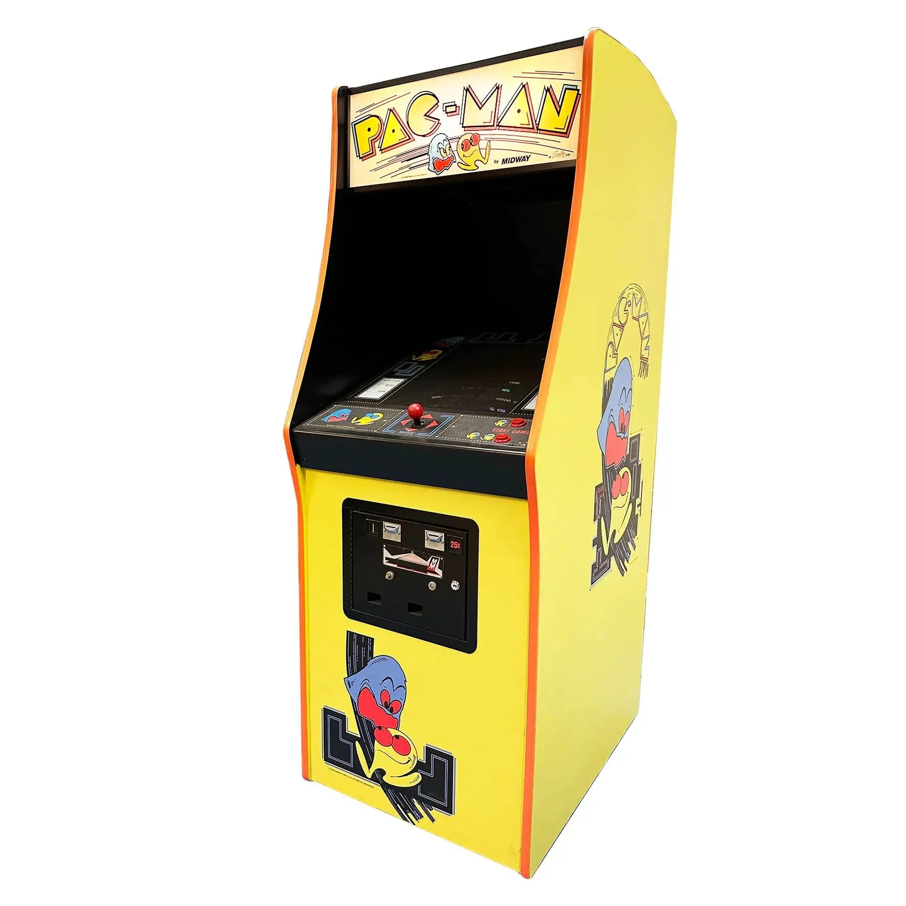
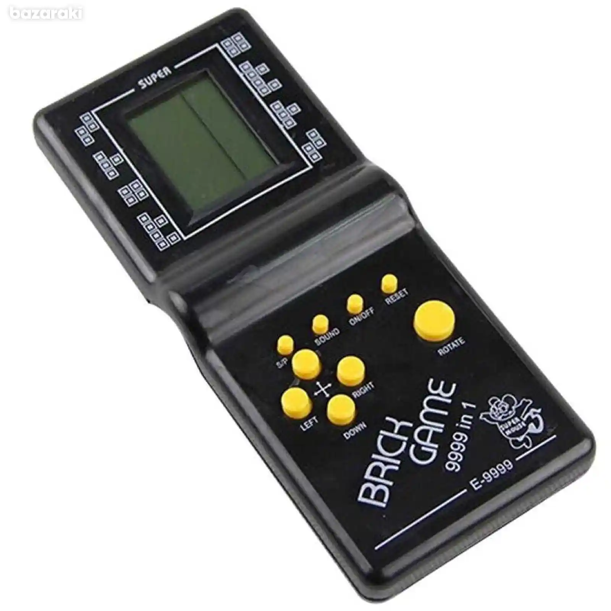
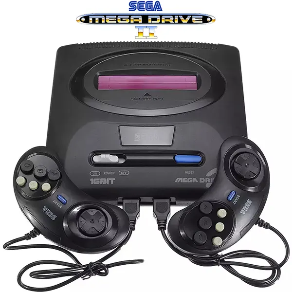
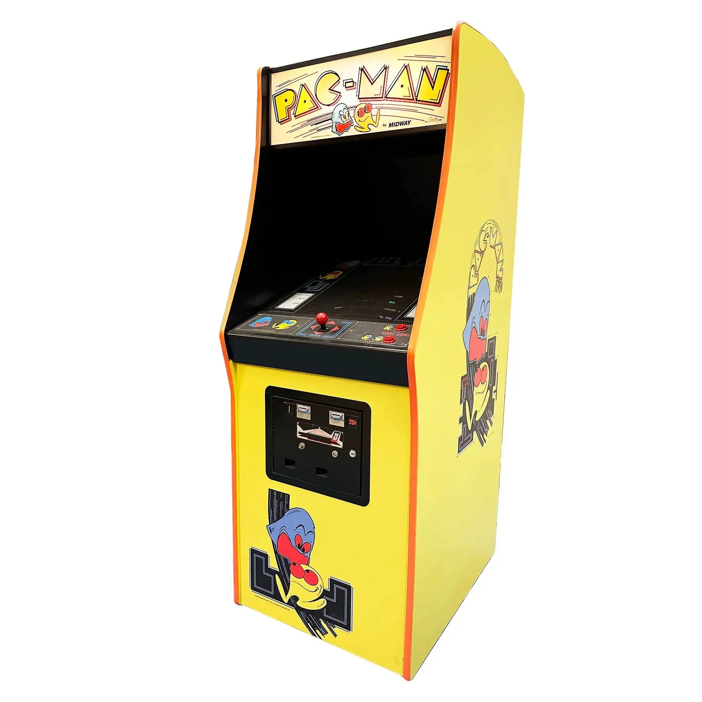
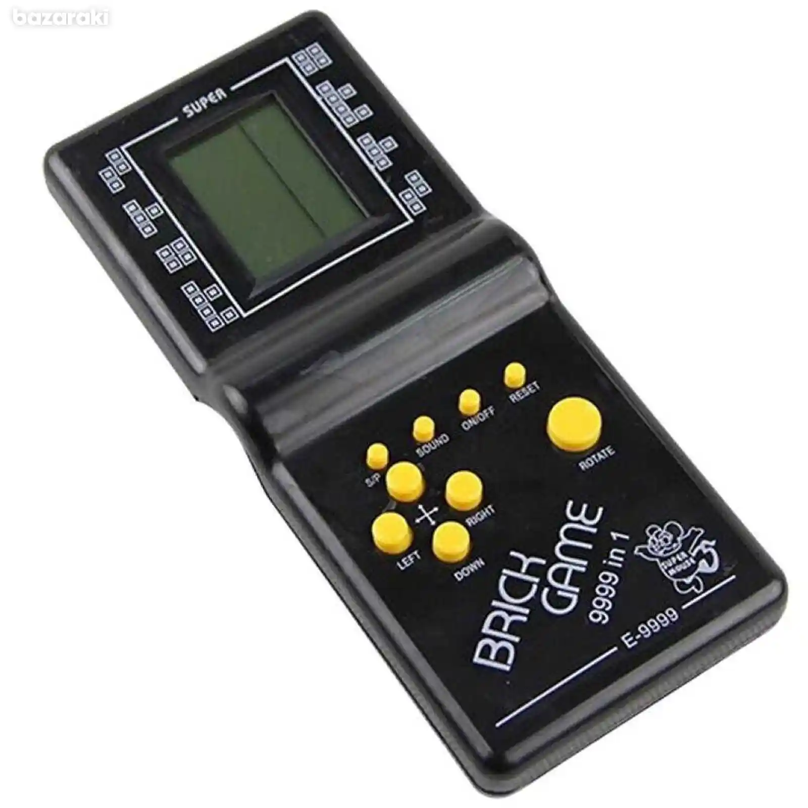
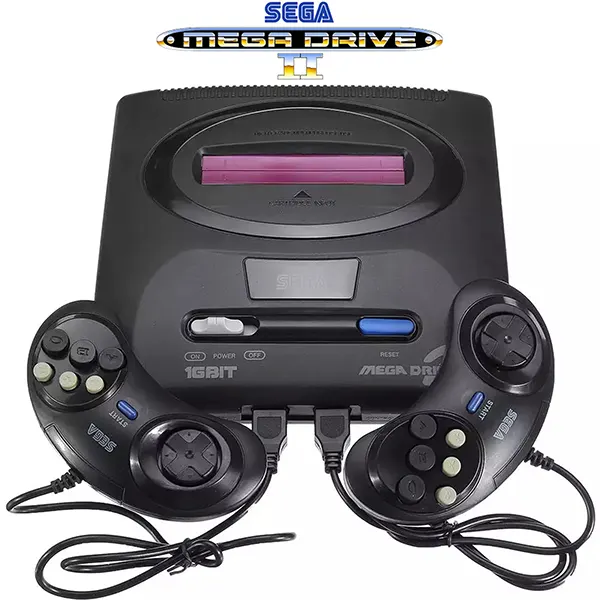

Tokom 80-ih i 90-ih, svet video igara je eksplodirao! Prve arkadne igre kao što su Pac-Man, Space Invaders i Tetris osvojile su igrače širom sveta, uvodeći zabavu u arkadne sale i domaće konzole. Njihova jednostavnost i zarazna igra učinili su ih kultnim naslovima koji i danas inspirišu nove generacije gejmera.
Konzole poput Nintendo Entertainment System (NES) i Sega Genesis donele su kućni gaming u domove, omogućivši igračima da uživaju u naslovima kao što su Super Mario Bros., Sonic the Hedgehog i Worms. Ovi naslovi nisu samo pružali zabavu, već su oblikovali ceo žanr platformskih i strateških igara.
Tokom kasnih 80-ih pojavile su se i prve portabilne konzole, kao što je Game Boy, koje su omogućile igračima da uživaju u igrama bilo gde. Multiplayer igre na arkadama i domaćim konzolama postale su izuzetno popularne, stvarajući prve gejming zajednice i turnire.
Igre poput Doom iz ranih 90-ih redefinisale su koncept pucačina i otvorile put za 3D grafiku i multiplayer online igranje. Ova era je obeležena eksperimentisanjem sa žanrovima, unapređenjem grafike i zvuka, i postavljanjem temelja za moderne igre koje danas poznajemo.
 




